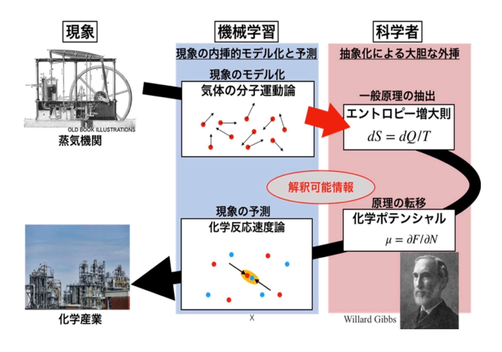

研究分野：データ駆動理学、解釈可能AI、機械学習
私の研究室では、原理・法則の発見しようとする研究者や、複雑な現象を予測し制御する開発者・事業者を支援する解釈可能な機械学習の枠組みの構築に取り組んでいます。そこで重要になるのが、小規模データからデータを超えた汎用的な知識をいかに抽出するかになります。このような小規模データのデータサイエンスで生じる課題は、機械学習技術が一般化し誰でも利用ができるようになりつつある現状で、次の課題として立ち現れる課題になると予想されます。このような課題に対して、深層ニューラルネットワークやガウス過程などの表現能力の高い機械学習モデルで複雑現象をモデル化し、そのモデルと物理的な知識とを結びつけることで解釈可能な情報を抽出し、科学者・開発者に提供することで法則・原理の抽出や新しい製品開発を促進します。私の研究室では、このような研究に必要な分析対象の知識や、機械学習技術の教育を実施するとともに、それを基盤に研究活動に取り組んでもらいます。
研究背景

熱力学では，ギブスが熱機関の理論であった熱力学を化学反応論に拡張し、科学に偉大な発展をもたらしました。このように、単なる内挿モデルを超えた一般原理を導き、それを大胆に外挿する人間の科学的洞察力は、科学を駆動する源泉です。しかし、非線形・非平衡現象などの複雑な系でその洞察力を働かせることは時に困難です。近年、深層ニューラルネットワーク（DNN）をはじめとした表現能力の高い機械学習モデルを用いて、複雑な科学データを分析・モデル化する研究が活発に行われています。しかし、その多くは内挿的なモデル構築に留まり、さらに、モデルは多量のパラメータをもつ非線形関数である為、その解釈が非常に困難です。これに対して我々は、複雑なデータの内挿モデル構築を得意とする機械学習と、科学的洞察によって大胆な外挿を実現する人間の協業が重要と考え、両者を橋渡しする手法開発を行っています。
研究テーマ(1)：深層ニューラルネットワークからの解釈可能情報の抽出
DNNは、データ分布が持つ構造を低次元多様体のような部分空間として抽出して、タスク達成に有用な情報を得る機能があると報告されています。物理系でもデータの低次元構造は、保存量や秩序変数といった物理的制約に関連すると考えられます。すなわち、DNNがモデル化したデータ多様体から、保存則や秩序変数といった解釈可能情報が抽出できると期待されます。力学系の一種であるハミルトン系では、座標変換に対する系の不変性と保存量を結びつけるネーターの定理が成立します。我々は、位置と運動量の時間遅れ空間上の時系列データ多様体の対称性から、力学系の対称性が推定できることを理論的に確認し、それを元に学習済みDNNからの保存量抽出法を開発しました。
研究テーマ(2)：ベイズ推論による科学者の法則・原理抽出過程のモデル化
科学の定義を論じる際の重要な項目の一つは「ア・プリオリな知識の排除」です。一方で，科学計測とその分析の現場では，初期値を恣意的に決めた最小二乗法回帰といった、人間の「主観」に強く依存した分析がよく行われます。我々はベイズ推論の枠組みを利用して、科学者がこのような状況に甘んじることなく、科学をよりその定義に忠実たらしめていく為の方針を提示する取り組みを行っています。ここでいう我々の取り組みとは、単純なベイズ推論の計測データへの適用ではありません。我々の取り組みとは、ベイズ推論を元に科学者の営みをモデル化することです。 ベイズ統計と科学者の営みの関係を述べます。ベイズ統計に基づく潜在パラメータxの推論では、関係する確率変数についての全ての情報を持つ同時確率p(x,y)を媒介として、因果関係p(y|x)p(x)を逆転p(x|y)p(y)してxを推定します。一方で科学者は、この世界を因果律x→yという視点から理解した上で、因果を遡りy→xその背景にある物理的潜在構造xを解明します。つまり、ベイズの定理とは、同時確率という世界を因果律により理解し、その因果を遡ることで物理的潜在構造を解明するという、科学者の営みをモデル化しているとみることができます。すなわち、計測をベイズ推論でモデル化することは、計測データを分析する科学者の営みのモデル化と捉えることができるのです。また、多くの科学者は、ある現象を説明できるモデルが複数ある場合、より単純なモデルを選択するという信念を持っています。この「オッカムの剃刀」的な信仰が、これまでの科学を駆動してきたと言って過言ではないでしょう。この科学者の信念はベイズ推論の枠組みによって自然にモデル化されます。 我々はこれまでに、物性物理学や材料科学といった様々な分野において、科学計測の営みをベイズ統計によってモデル化してきました。さらに、ベイズ推論を計測に適用することで、計測データに基づく有効モデル抽出や、事後分布からの物理情報抽出といった、単純な計測データの分析にとどまらない物理学者を支援する情報抽出の実現を試みています。
研究テーマ(3)：位相的データ解析による解釈可能な複雑現象モデルの構築
|
|
結晶構造のような周期構造に対するフーリエ基底空間や、熱力学現象のようなランダム現象における圧力や温度といった統計量空間は、それらの重要な情報を保持しつつモデル化する上での基盤を与えました。一方で、材料構造にみられる非周期的な秩序構造を形成する非線形で非平衡なパターン形成現象を扱う適切な座標系は未だに発見されたとは言い難いです。近年、パーシステントホモロジーを用いた位相的データ解析を用いることで、アモルファスのガラス状態をはじめとした非周期的な秩序構造をが特徴付けられることが報告されています。パーシステントホモロジーとは、穴の数のようなトポロジカルな構造に、その構造の空間スケール等の情報を付加した不変量のことです。我々は、このパーシステントホモロジーから導かれる特徴量を用いることで、非線形・非平衡なパターン形成過程の分析を試みています。